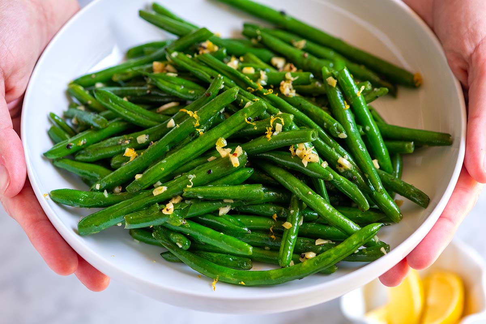

Buttery Garlic Green Beans

Only fresh green beans and garlic will do for this easy, healthy, and flavorful side dish.
As much as I wanted to load these green beans up with tasty things like bacon, cheese, or nuts
before sharing them with you, in the end simplicity won.
At my house veggie side dishes are always very uncomplicated. I spend plenty of time on the main dish,
I don’t need to over-think the vegetables.
Ingredients
- 1 pound fresh green beans, trimmed and snapped in half
- 3 tablespoons butter
- 3 cloves garlic, minced
- 2 pinches lemon pepper
- salt to taste
Steps
- Place green beans into a large skillet and cover with water; bring to a boil. Reduce heat
to medium-low and simmer until beans start to soften, about 5 minutes. Drain water.
Add butter to green beans; cook and stir until butter is melted, 2 to 3 minutes.
- Cook and stir garlic with green beans until garlic is tender and fragrant, 3 to 4 minutes.
Season with lemon pepper and salt.